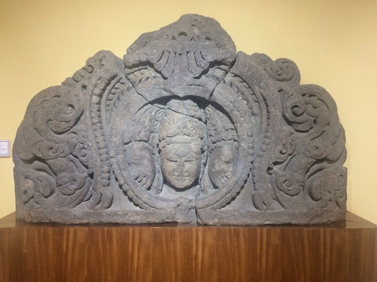
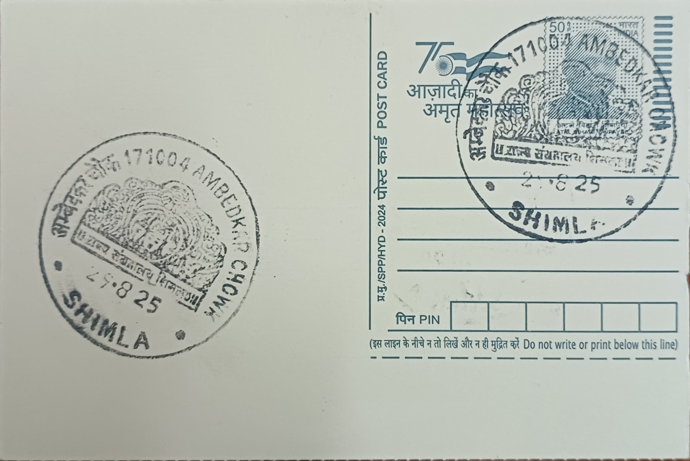

The name Bhadramukha combines "bhadra," meaning auspicious, gentle, or benevolent, with "mukha," meaning face, so the form is understood locally as the gracious countenance of Shiva turned toward his devotees rather than his fiercer, destructive aspect. This naming convention follows a well-established pattern in Shaiva iconography across the subcontinent, where a single linga is given one or more sculpted faces, known as a mukhalinga, to humanize the otherwise aniconic symbol of the god and to allow a particular mood or attribute of Shiva to be singled out for worship. In the Shimla hills, where devotional practice has long blended pan-Indian Puranic Shaivism with indigenous hill-deity custom, such a localized, named manifestation allows a community or a neighbourhood shrine to claim a personal, protective relationship with Mahadev distinct from the generic temple down the road.
Himachal Pradesh is sometimes described by scholars and local tradition alike as Shiv-bhumi, the land of Shiva, owing to the sheer density of shrines across the state dedicated to the god in his many classical and vernacular names, and the high Himalayan peaks themselves are popularly regarded as his abode. Within this landscape, a form such as Bhadramukha Shiva belongs to the broader category of localized guardian or household deities that give the pan-Indian god a specifically Himalayan character, standing alongside goddess traditions such as Bhadrakali and Tara Devi that are also venerated in and around Shimla. Its significance is thus less architectural than devotional and communal, functioning as a focal point for a particular locality's daily ritual life, vows, and seasonal observance rather than as a site of wider pilgrimage renown.
Temple construction in the Shimla region historically followed two parallel traditions, North Indian stone shikhara architecture and the distinct Pahari style of deodar wood-and-stone temples built by local hill artisans, both of which were used for Shiva shrines across Himachal Pradesh from at least the later first millennium onward, when the hill cultural sphere came under the influence of dynasties such as the Gurjara-Pratiharas. A Bhadramukha depiction in this tradition is typically rendered as a mukhalinga within a small sanctum, the face carved or embossed directly onto the stone shaft or fashioned as a metal mask fitted over it, a technique that lets the same linga be unveiled with different expressions on different ritual occasions. Shrines of this scale in Shimla are generally modest neighbourhood structures tended by local priests rather than large temple complexes, their upkeep resting on resident committees and daily offerings rather than state endowment.
What distinguishes this particular form from other local Shiva images is its specific emotive register, the deliberate emphasis on benevolence and protection that the term bhadra encodes, which devotees invoke especially at moments calling for safety, healing, or the removal of misfortune rather than for more austere ascetic or wrathful aspects of the god. This pairing of a gentle facial iconography with the otherwise formless linga situates the shrine within the same devotional logic that produced celebrated mukhalingas elsewhere in India, even though the Shimla example remains a modest, locally known instance rather than one documented in major art-historical surveys. Worship typically follows the standard Shaiva calendar observed across the hills, with heightened observance during Shivratri and the monsoon month of Shravan, when hill-temple Shiva shrines generally see their largest gatherings of devotees.
Day-to-day custodianship of such shrines in Shimla usually falls to local priestly families or temple trusts rather than any single state department, with the Himachal Pradesh temple and tourism authorities cataloguing the district's better-known Shiva sites, such as Jakhu and Sankat Mochan, while smaller localized shrines like this one continue to operate through community arrangement. The Bhadramukha Shiva shrine associated with the area now served by the Ambedkar Chowk sub-post office fits this pattern of unobtrusive, locally sustained worship, its continued use shaped more by the neighbourhood's own ritual calendar than by any formal conservation programme, making it a working part of the surrounding residential quarter's religious routine rather than a destination temple in its own right.
| Date of Introduction | Not Available |
|---|---|
| Address | Sub Postmaster, |
| Ambedkar Chowk SO, | |
| Shimla (dt.), Himachal Pradesh - 171004. |